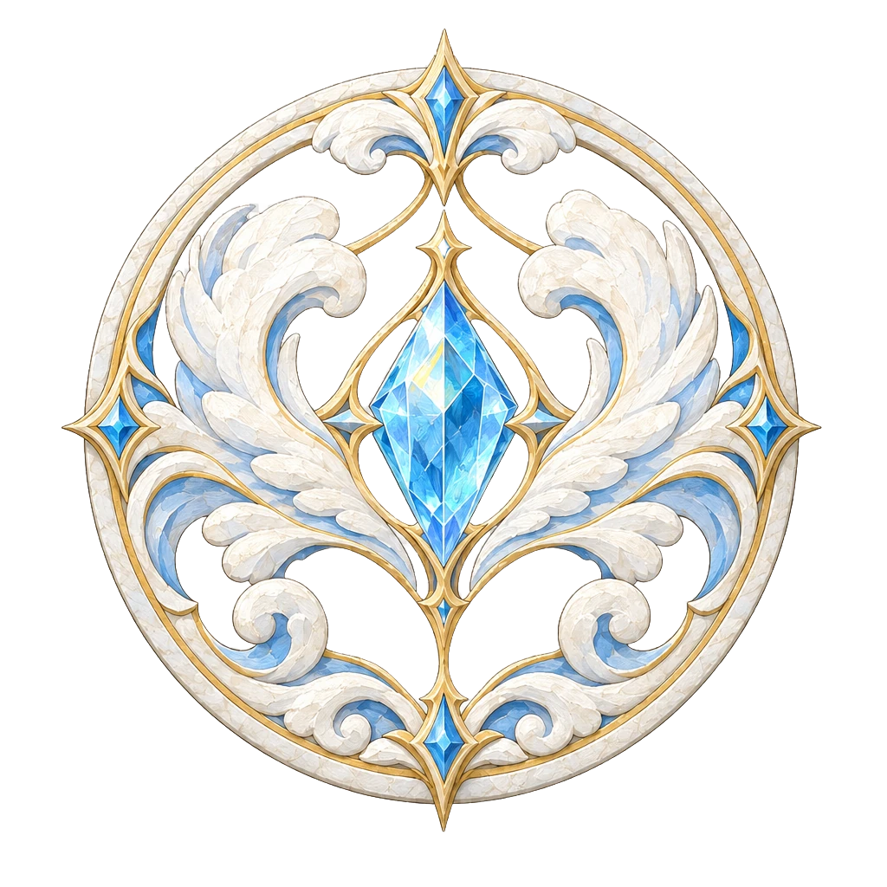
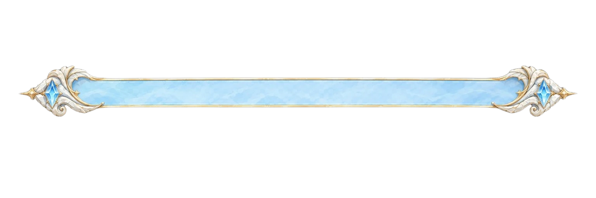

Chapter 3「天空の浮島」先行素材 18点 QA
ボード・道・マス・START／GOAL は未設計（ここでは決めない）。ジオラマは大きさ・色・遠近の確かめだけ。表示は派生 WebP（assets/fields/ch3/sky_1016/）。
1. ジオラマ（2.5D の重なり・ゆっくり流れる）
奥（小さく薄い）→ 中 → 手前（大きい・雲の霞）。道路・橋の床にあたる素材は今回の18点に無い（欄干・橋脚・崖は飾り）。
2. 海 → 空のつながり（参考・Chapter 3 の正式演出ではない）
下＝Chapter 2 の外海（open_sea_water）。水平線の上に雲と浮島。色の階調のつながりを見る参考。
3. Chapter 2 の似た素材と並べる（色・線の太さ・明るさ）
4. UI 2点（文字は HTML。画像に文字は無い）

CHAPTER 3天空の浮島

メダリオン＝中央に結晶の紋章（文字を重ねる場所ではない＝Chapter 2 の海のメダリオンと同じ使い方）。名札＝細い線の飾り（Chapter 2 の sea_zone_nameplate と同じく題字の下に敷く。文字を入れる板ではない）。名前「天空の浮島」は既存のデータ（js/phase7/progression.js の CHAPTER_DEFS）。HUD・能力6色・マス記号は置き換えていない。